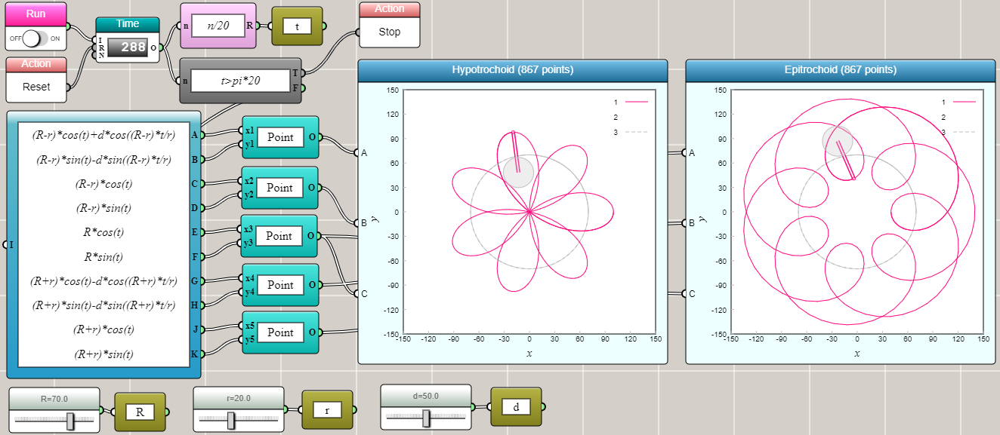
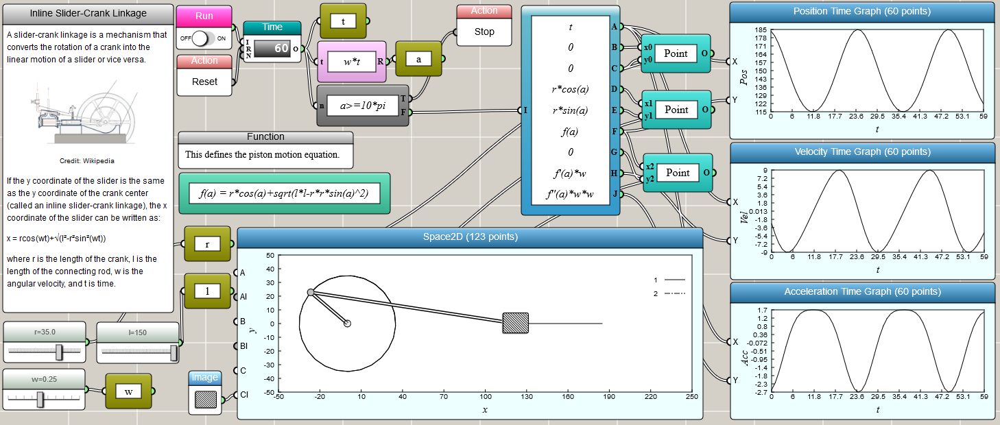
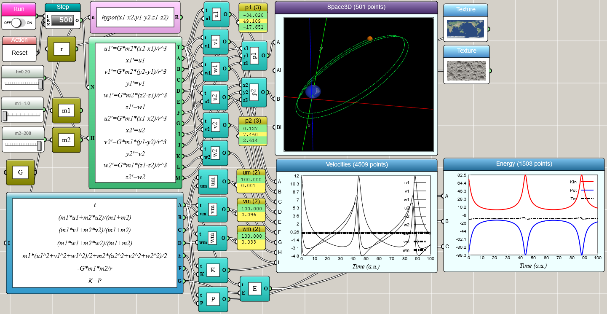
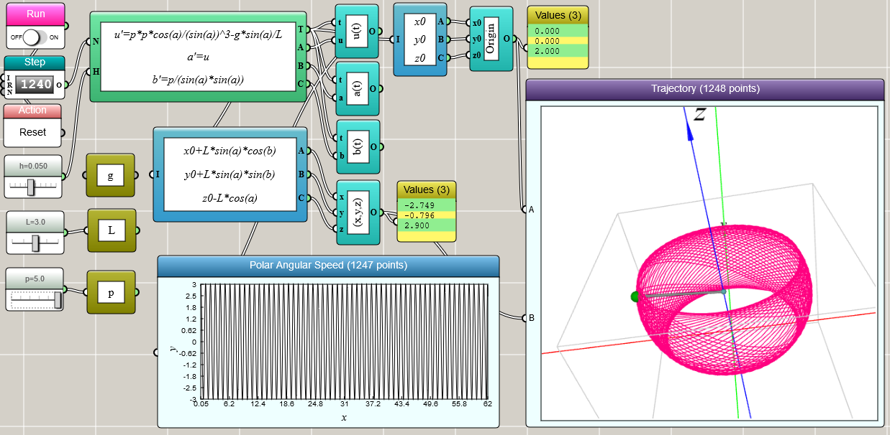

iFlow
Using iFlow to Solve Classical Mechanics Problems
From hypotrochoids to the spherical pendulum, iFlow turns kinematics and dynamics problems into runnable visual models.
← Back to iFlow
← Back to iFlow
Kinematics
Kinematics is a subfield of classical mechanics that describes the motion of objects without concern for the forces that cause them to move.
Hypotrochoid and epitrochoid

Inline slider-crank linkage

Dynamics
Dynamics is a subfield of classical mechanics concerned with the study of forces and their effects on motion of objects. The following are some examples of studying dynamics with iFlow.
The two-body problem

The spherical pendulum
